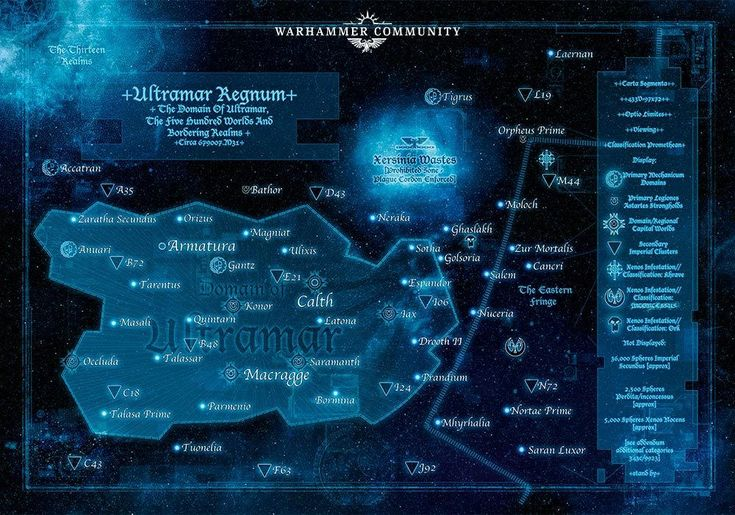

fol. IVUltramar
The Five Hundred Worlds
No other primarch built a civilization to match his Legion. Ultramar remains one of the Imperium's most stable, prosperous, and fiercely defended regions.

II
images/ultramar/ultramar-star-map.jpg
map / banner · 735×515
1.Register of key worlds
i
Macragge
Capital world of Ultramar and fortress-home of the Ultramarines, seat of the Fortress of Hera.
Capital
ii
Calth
Scarred by the Word Bearers' betrayal; much of its population still lives in vast underground vaults.
Battleground
iii
Konor
Named for the tribune who raised Guilliman; a key forge and administrative world of the realm.
Forge world
iv
Iax
Once a shining Ultramar world, later devastated in the wars that followed Guilliman's return.
Lost world
v
Prandium
A garden world stripped to bare rock by Hive Fleet Behemoth on its approach to Macragge.
Lost world